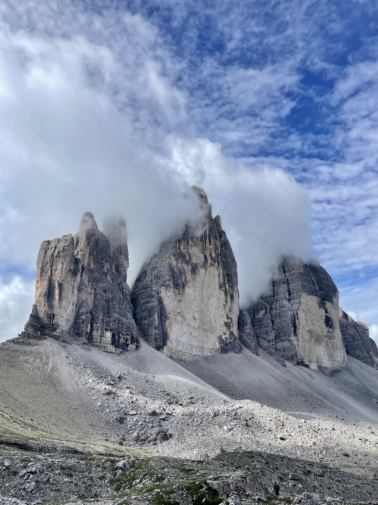

Cathedrals of Stone
TRE CIME DI LAVAREDO · DOLOMITES · ITALY
Some mountains dominate the landscape through their height. Others through their beauty. The Tre Cime di Lavaredo achieve both while possessing something even rarer: a silhouette so distinctive that it has become a symbol of the entire Dolomite range.
Rising abruptly from the high alpine plateau of northeastern Italy, these three immense rock towers are among the most recognizable mountains in Europe. For hikers, climbers and photographers, they represent the very essence of the Dolomites: dramatic cliffs, towering walls and landscapes that seem almost too spectacular to be real.
Standing beneath their vertical faces, it is impossible not to feel small. The scale of the rock, the movement of the clouds and the silence of the high mountains create an atmosphere unlike anywhere else in the Alps.

The Three Peaks
The name Tre Cime di Lavaredo translates simply as "Three Peaks of Lavaredo".
The massif consists of three main towers: Cima Grande, Cima Ovest and Cima Piccola. Together they form one of the most famous mountain groups in the world.
Unlike many Alpine summits that remain partially hidden within large mountain ranges, the Tre Cime stand exposed and isolated, allowing their monumental vertical walls to dominate the landscape from every angle.
For more than a century, these peaks have attracted explorers, climbers and photographers drawn by their unique appearance and remarkable geological history.
An Ancient Tropical Sea
The story of the Dolomites begins hundreds of millions of years ago beneath a warm tropical sea.
Long before the Alps existed, this region was covered by shallow lagoons filled with coral reefs and marine life. Over time, layers of shells, limestone and mineral-rich sediments accumulated on the seabed.
During the formation of the Alps, tectonic forces lifted these ancient deposits thousands of metres into the sky. The result was a mountain range unlike any other in Europe.
The Dolomites are named after the mineral dolomite, discovered by the French geologist Déodat de Dolomieu. This unique rock gives the mountains their pale colour and dramatic vertical appearance.
What once existed beneath a tropical ocean now rises high above the clouds.
Cathedrals of Stone
Few mountains better demonstrate the power of erosion than the Tre Cime.
Wind, frost, rain and glaciation have sculpted these towers over millions of years, removing weaker layers and leaving behind immense vertical walls that rise hundreds of metres above the surrounding landscape.
Their appearance often changes by the hour.
Clouds wrap around the summits. Sunlight illuminates one face while leaving another in shadow. Storms arrive unexpectedly before disappearing just as quickly.
The constantly changing atmosphere is part of what makes the Tre Cime such a compelling photographic subject.
{kind=link}

The Birthplace of Alpine Climbing
The Tre Cime occupy a special place in the history of mountaineering.
During the late nineteenth century, climbers began attempting the steep and exposed faces that had long seemed impossible to ascend.
These mountains quickly became a proving ground for early Alpine pioneers.
Today, many of the routes established during that era remain among the most respected rock climbs in Europe. Climbers continue to travel from around the world to challenge themselves on the same walls that helped shape the development of modern alpinism.
A Landscape Shaped by War
The Tre Cime are not only a place of natural beauty. They are also a place of history.
During the First World War, the surrounding mountains formed part of the front line between Italy and the Austro-Hungarian Empire.
Soldiers fought at extreme altitudes in some of the harshest conditions imaginable. Tunnels, fortifications and military positions were carved directly into the rock.
Even today, hiking trails reveal traces of this conflict, reminding visitors that these peaceful landscapes once witnessed intense hardship and sacrifice.
A UNESCO World Heritage Landscape
The extraordinary beauty and geological importance of the Dolomites earned them recognition as a UNESCO World Heritage Site.
Their unique rock formations, spectacular cliffs and exceptional geological record make them one of the most significant mountain landscapes on Earth.
The Tre Cime stand at the heart of that recognition, serving as one of the defining icons of the entire region.
Cathedrals of Stone
What makes the Tre Cime unforgettable is not simply their height or their fame.
It is the feeling they create.
Ancient seas transformed into mountains. Vertical walls rising above alpine valleys. Clouds drifting through stone towers that seem to touch the sky.
They are monuments shaped not by human hands but by millions of years of geological history.
For climbers they are a challenge. For hikers they are a destination. For photographers they are a masterpiece of light, texture and scale.
And for anyone fortunate enough to stand beneath them, they remain exactly what they appear to be: cathedrals built from stone.
Related Stories
Explore another remarkable alpine landscape in The Edge of the Alps. A photographic journey through Saxer Lücke in Switzerland.
Photo Notes
Location: Tre Cime di Lavaredo, Dolomites, Italy
Region: South Tyrol / Belluno
UNESCO Status: World Heritage Site
Category: Landscape Photography
Subject: Alpine Geology and Mountain Landscapes
Photographer: Carles Torres